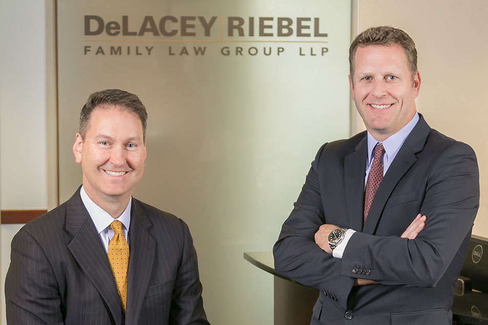
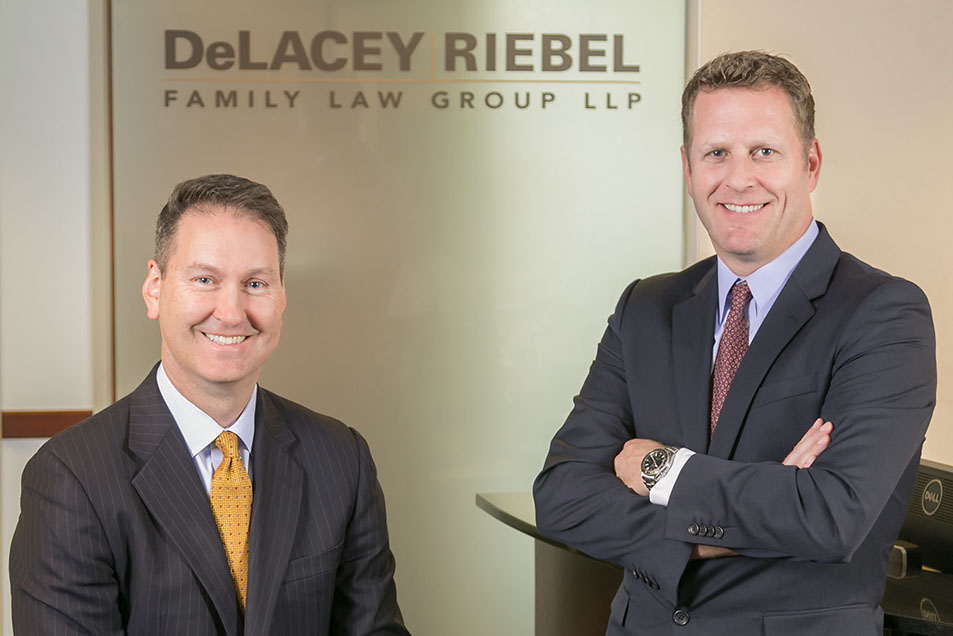

Frank Tapia Commercial Photography Studio serving the San Francisco Bay Area for advertising, architectural, beauty portraits, corporate headshots, industrial, portrait and product photography.
Frank Tapia is a commercial photographer servicing the San Francisco Bay Area: Advertising photography, Architectural photography, Corporate photography (portraits, business portraits, corporate headshots and corporate group photos), Industrial photography, Portrait photography (professional headshots, portraits, business portraits, corporate headshots) and Product photograph. San Francisco Bay Area commercial photographer Frank Tapia thinks of his studios as an image laboratory.
As San Francisco Bay Area commercial photographers, we travel through out the bay area for photographic projects.
For your San Francisco commercial photography projects, call a San Francisco Bay Area commercial photographer: Frank (510) 849-0772 frank1@ftapia.com Commercial photography in the San Francisco Bay Area is our business.
For your San Francisco Architectural photography projects, call architectural photographer Frank Tapia (510) 849-0772. As a San Francisco Bay Area architectural photographer, I provide architectural photography services through out the San Francisco Bay Area. I travel at no extra cost for a minimum ½ day projects to San Francisco, Oakland, Orinda, Walnut Creek, Concord, Danville, Hayward, San Mateo, San Jose and Palo Alto.
As an architectural photographer San Francisco Bay Area and Architectural Photographer Oakland, I provide quality architectural photography at competitive prices. Review the architectural photography images on this web site and judge for yourself. Because Frank Tapia Commercial Photography Studio is a diversified commercial photography studio, we can offer competitive prices compare to a photo studio specializing only in architectural photography San Francisco Bay Area.
San Francisco architectural photographer / Oakland architectural photographer Frank Tapia goal is to provide top-quality architectural photography that meets both the client's aesthetic and budgetary requirements. If you are looking for a San Francisco Bay Area architectural photographer, call Frank Tapia Commercial Photography Studio: (510) 849-0772 Our business is San Francisco Bay Area architectural photography.
When Corporate Photographers San Francisco Bay Area Frank Tapia or Nicholas Tapia are shooting traditional corporate headshots, corporate portraits and corporate groups, they strive to make executives appear professional and approachable to potential clients or general public. As Corporate Photographers San Francisco Bay Area Frank Tapia and Nicholas Tapia strive to make the causal corporate headshots, corporate portraits and corporate groups appear professional and trustworthy.
Corporate headshots, corporate portraits and corporate groups are traditionally photographed with a suit and tie. In the last decade, many executives have selected a more casual image for their corporate headshots, corporate portraits and corporate groups, which reflects a culture that no longer dresses formally in the workplace. In addition, the background for corporate headshots, corporate portraits and corporate groups reflects the branding executives want to project to potential clients or general public.
A review of Corporate Photographer San Francisco Bay Area Frank Tapia's web site of corporate photography and client pages is a testimonial to our experience and quality as a San Francisco Bay Area corporate photographers.
For your corporate photography San Francisco Bay Area needs, call corporate photographer Frank Tapia: (510) 849-0772.
Portrait Photographer Berkeley / Portrait Photographer Oakland / Portrait Photographer San Francisco
If you are in need of a Portrait / Photographer Berkeley / Portrait Photographer Oakland / Portrait Photographer San Francisco call Frank Tapia Commercial Photography Studio: (510) 849-0772
Unless you are a model, most people feel uncomfortable taking professional headshots, executive portraits and business portraits. It is a challenge for portrait photographers to make people feel comfortable taking professional headshots, executive portraits and business portraits. However, as Portrait Photographers Berkeley, Portrait Photographers Oakland and Portrait Photographers San Francisco, Frank and Nicholas Tapia have learned techniques that make people appear relaxed and comfortable. Portrait photographers are worth the cost for professional headshots, executive portraits and business portraits because professional photographers can reliably capture the best expression, mood, and personality of the subject. Professional headshots, business portraits or executive portraits are a person's face to the world.
Our Berkeley photography studio and Phoenix photography studio are low stress, consistently produces quality image and are competitively priced for the San Francisco Bay Area and Phoenix Metropolitan Area.
The Berkeley photography studio draw clients from San Francisco, Oakland, Orinda, Walnut Creek, Concord, Danville and Hayward. For a Portrait Photographer Berkeley / Portrait Photographer Oakland / Portrait Photographer San Francisco, call our Berkeley portrait photography studio at (510) 849-0772. The Berkeley photo studio is located at 120 Panoramic Way, Berkeley, CA.
Industrial Photography - Industrial Photographer
Industrial photography can be defined as industrial photographer photographing industrial production processes, products, work organization, employees, the layout, equipment, or culture of an enterprise. The images produced by an industrial photographer can be used either for internal or external purposes. Industrial photography does overlap into other areas of photography such as advertising photography, architectural photography, corporate photography and product photography.
As San Francisco industrial photographers, we will travel to San Francisco, Oakland, Orinda, Walnut Creek, Concord, Danville, Hayward, San Mateo, San Jose or Silicon Valley, Palo Alto, Tracy and Stockton or Central Valley. Because we are Berkeley professional photographers, we can drive within 2 hours to Tracy, Stockton or Central Valley.
We really enjoy going into an industrial site and photographing American workers making things. Review the Industrial photography images we shot at TenCate Advanced Composites USA, Inc, NanoGram Corporation and GEA Westfalia Separator.
For your San Francisco Product Photography projects, call Frank Tapia Product Photography Studio (510) 849-0772. For an Oakland product photographer, call (510) 849-0772. For your Berkeley Product Photography projects, call Frank Tapia Product Photography Studio (510) 849-0772. Frank Tapia is using a light table top and 4x8 table top in the Berkeley product photography studio. a high resolution digital camera is tethered to a 27 inch monitor for live view. Product photography process is a pleasure for both product photographer Frank Tapia and clients.
As a Product Photographer San Francisco, Product Photographer Oakland or Product Photographer Berkeley, with a Berkeley product photography studio, we can meet your product photography needs.
Beauty portrait photography is a new speciality of our San Francisco Bay Area portrait beauty photography studio. We use beauty portrait photography lighting to greatly eliminate shadows on a subject’s face. Beauty portrait photography lighting basically reduces wrinkles to a minimal and brightens the eyes. With you sitting next to us at a 27 inch monitor, we apply beauty portrait photography post processing (how much depends on what you like). Clients love this process, it is fun. The result is a high fashion beauty portrait image. Call or email our Beauty Portrait Photography Studio San Francisco Bay Area for a beauty portrait photography session. Beauty Portrait Photographer for San Francisco Bay Area Frank Tapia will response to your call: (510) 849-0772